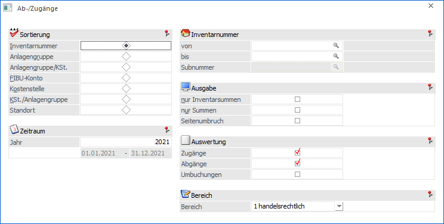
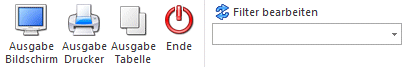
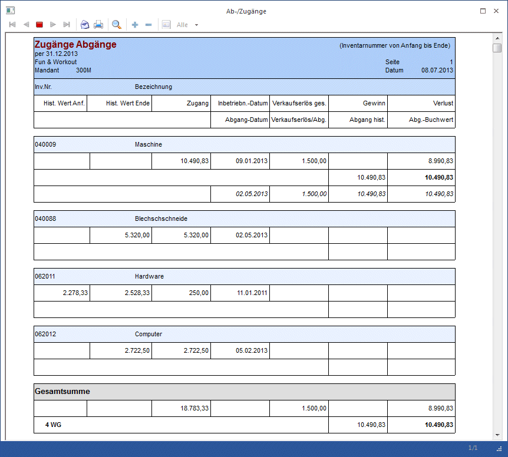

Mit der Liste der Ab-/Zugänge können alle Abgänge und / oder Zugänge eines Wirtschaftsjahres ausgegeben werden.
Dazu gehen Sie in den Menüpunkt
1 Auswertungen
1 Ab-/Zugänge.

Ø Sortierung
Es besteht die Möglichkeit eine Sortierung nach der
ü Inventarnummer
ü Gruppe (Anlagengruppe, der das Inventargut im Anlagenstamm zugeordnet wurde)
ü Gruppe/KSt. (innerhalb der Gruppe nach der Kostenstelle)
ü FIBU-Konto
ü Kostenstelle
ü KSt./Gruppe (innerhalb der Kostenstelle nach der Gruppe)
ü Standort
vorzunehmen.
Ø von - bis
Je nachdem, welches Sortierkriterium gewählt wurde, kann der Ausdruck durch die hier einzugebenden Grenzen eingeschränkt werden. Haben Sie nach der Gruppe sortiert, druckt der Matchcode alle zur Verfügung stehenden Anlagengruppen an. Richtet sich die Sortierung nach dem FIBU-Konto, erhalten Sie über den Matchcode eine Übersicht aller in Frage kommenden FIBU-Konten. Das gleiche gilt für die Sortierung nach Kostenstellen (Kostenstelle von - bis) und nach der Inventarnummer (Inventarnummer von - bis). Für die Eingrenzung von - bis Standort steht eine Combobox mit den vorhandenen Standorten zur Verfügung.
Ø Subnummer
Wurde als Inventarnummer ein Hauptanlagegut eingetragen, zu welchem auch Subanlagen existieren, kann hier die Subanlagen-Nummer eingetragen oder über den Matchcode ausgewählt werden.
Ø nur Inventarsummen
Es werden pro Inventargut nur Summen ausgewiesen, d.h. sollte es Subanlagen dazu geben, werden diese NICHT angezeigt.
Ø nur Summen
Wird diese Checkbox aktiviert, werden in der Liste der Ab-/Zugänge nur Summenwerte angezeigt.
Ø Seitenumbruch
Durch Aktivierung der Checkbox erhalten Sie einen Seitenvorschub pro Sortierung, z.B. pro Gruppe.
Ø Jahr
Hier geben Sie das Jahr ein, für das Sie die Liste der Ab-/Zugänge ausgeben möchten. Aufgrund des immer zur Verfügung stehenden und für die gesamte Lebensdauer aller Anlagen gerechneten Anlagenjournals, kann jederzeit jedes beliebige Wirtschaftsjahr, das mit einer WinLine ab Version 8.0 abgeschrieben wurde, ausgewertet werden!
Ø Auswertung
Hier besteht die Möglichkeit der Ausgabe einer Liste mit
ü Zugängen
ü Abgängen
ü Umbuchungen
Durch das Aktivieren der Checkboxen kann eine Liste nur mit Zugängen, Abgängen oder Umbuchungen oder auch eine Liste mit wahlweise 2 Buchungsarten oder mit allen Zugängen, Abgängen und Umbuchungen ausgegeben werden.
Ø Bereich
Hier kann entschieden werden, ob in der Liste der Ab-/Zugänge die steuerrechtlichen oder handelsrechtlichen Werte ausgegeben werden sollen.
Automatisch vorgeschlagen wird das Abschreibungsverfahren, welches im ANBU-Parameter / Buchen für die Buchungsübergabe definiert ist.
Buttons

Ø Ausgabe Bildschirm
Standardmäßig wird die Ausgabe auf dem Bildschirm vorgeschlagen, die auch durch Drücken der F5-Taste gestartet werden kann.
Ø Ausgabe Drucker
Die Auswertung wird am Drucker ausgegeben.
Ø Ausgabe Tabelle
Wenn die Option "Ausgabe Tabelle" gewählt wird, dann wird die Liste in einer Tabelle dargestellt. Die Tabelle hat die gleichen Funktionen wie Excel (z.B. Bilden von Summen) und kann auch als XLS-Datei exportiert werden (über rechte Maustaste, Exportiere Tabelle), wo die Daten dann auch weiterbearbeitet werden können.
Ø Ende
Das Fenster wird geschlossen, ohne dass eine Auswertung angezeigt wird.
Ø Filter bearbeiten
Wird der Filter-Button angeklickt, kann ein neuer Filter definiert oder ein bestehender Filter gewählt werden. Dort kann eingestellt werden, nach welchen frei definierbaren Kriterien die Selektion durchgeführt werden soll (Details entnehmen Sie dem Kapitel Filter - Assistent).
Wurden in diesem Fenster bereits Filter angelegt, kann aus der Auswahllistbox ein bestehender Filter gewählt werden. Es werden immer nur die Filter angezeigt, die für das gerade aktive Fenster angelegt wurden.
